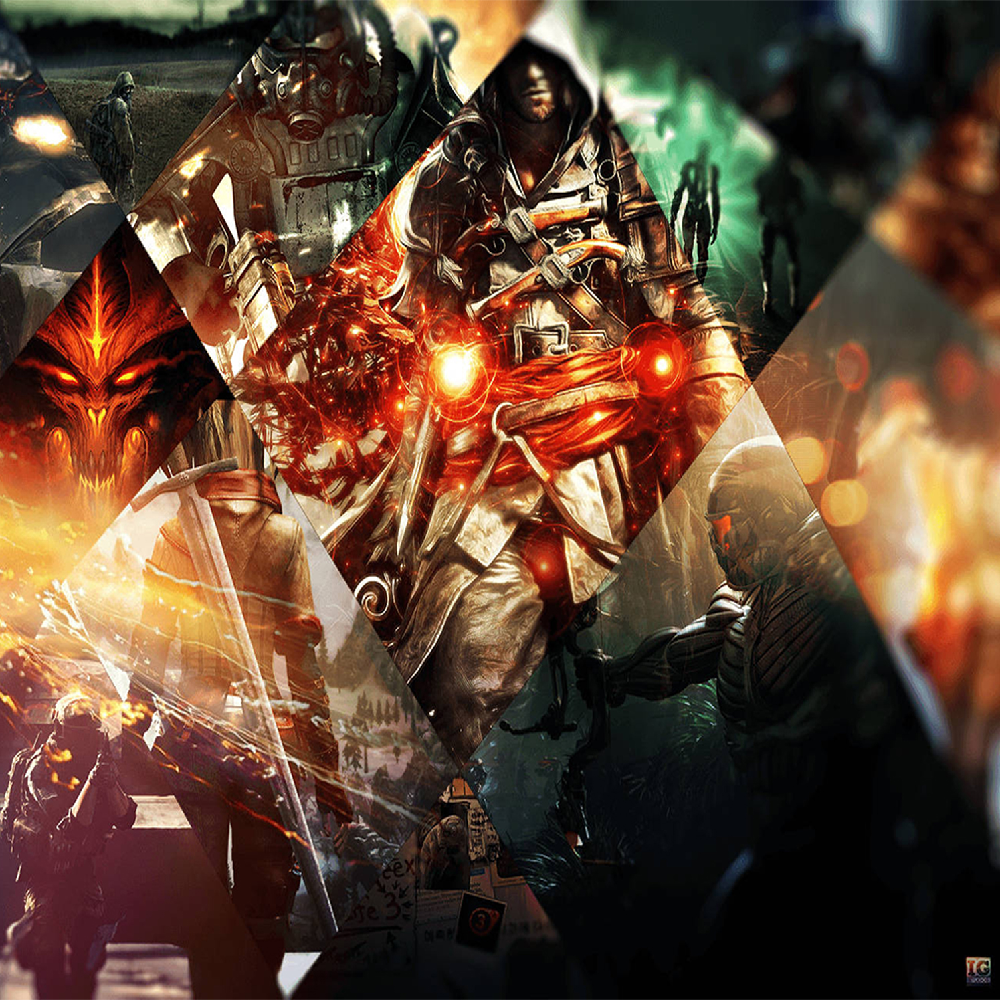
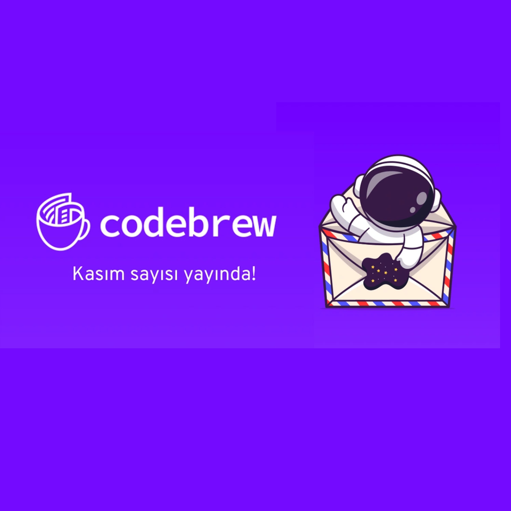
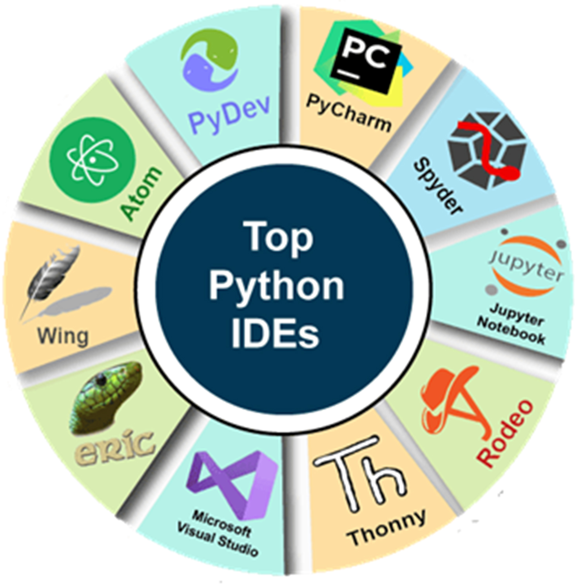

Online Oyunlarda Oyuncuların Kullandığı Terimler ve Kısaltmalar
Sanal dünyalarda etkileşim ve rekabet sağlayan popüler eğlence ortamları olan çevrim içi oyunlar, geniş bir oyuncu topluluğunu
bir araya getiriyor. Bu oyunlarda oyuncular arasında hızlı ve etkili bir iletişim sağlamak amacıyla pek çok terim ve kısaltma
kullanılabiliyor. Öyle ki bahse konu terim ve kısaltmalar, oyunlara özgü bir dil oluşturarak oyuncuların birbirleriyle etkileş
im kurmalarını hayli kolaylaştırıyor. Dilerseniz gelin, bu terimve kısaltmalardan bazılarına birlikte göz atalım.
AA/Auto-Attack: MOBA’larda ve gerçek zamanlı stratejilerde, otomatik saldırı anlamına gelir ve sabit aralıklarla tekrar eden
saldırıyı ifade eder.
AFK: Klavyeden uzakta anlamına gelen İngilizce “away from keyboard” ifadesinin kısaltmasıdır. Oyuncu, o an oyunun başında olma
dığını bu yolla belirtir ve gerekirse takımdaki diğer oyuncular, AFK durumundaki oyuncuyu beklerler.
BRB: İngilizce “hemen döneceğim” anlamına gelen “be right back”in kısaltmasıdır. AFK gibi oyuncunun, oyun başında olmadığını
gösterir ama BRB yazan oyuncular, oyuna daha kısa sürede dönerler.
GG: Türkçesi “iyi oyun” olan “good game” ifadesinin kısaltmasıdır. Bu, iyi sportmenliği göstermek için bir oyunun sonunda kull
anılan bir terimdir. Ancak bunu ilk kazanan taraf kullanırsa BM kapsamında değerlendirilebilir.
Glitch: Türkçe kusur anlamına gelen terim, oyunu bozmayan ancak oyunda var olan bir hatayı ifade eder. Bu hata, oyunlarda hile
yapabilmeyi de mümkün kılabilir.
GLHF: Türkçesi “iyi şanslar, iyi eğlenceler” şeklinde olan İngilizce “good luck, have fun” ifadesinin kısaltmasıdır ve daha
çok sportmen oyuncular tarafından kullanılan, karşı tarafı selamlama şeklidir.
OP: Türkçe “aşırı güçlü” anlamına gelen “overpowered” ifadesinin kısaltmasıdır. Çok güçlü olduğu düşünülen bir karakter için
kullanılır.
HP: Türkçeye “can değeri” olarak çevrilebilecek “hit point” teriminin kısaltmasıdır. Karakterin veya nesnenin sağlık ya da
dayanıklılık seviyesini temsil eder.
Aggro: Çevrim içi çok oyunculu oyunlarda yaygın olarak kullanılan bir terim olan “aggro”, düşmanın dikkatini çekmek anlamına
gelir. Genellikle Tank pozisyonunda olan oyuncular, aggro’nun tatsız sonuçlarına maruz kalabilirler.

Genel Kültürünüzü Geliştirebileceğiniz 6 Oyun
Kimilerine göre zaman kaybı, kimilerine göreyse boş zaman öldürme aracı şeklinde görülse de yayınlanan hemen her oyun, apayrı zihinlerden çıkan, eşsiz bir dijital
mahsul olma özelliğini hiç kaybetmiyor. İlhamını hayatın ta kendisinden alması nedeniyle birçok oyunda şiddet, sevgi, hayal kırıklığı gibi temalar işleniyor. Ancak
bazı yapımlar, ele aldıkları konuların yanında oyuncuya farklı vizyonlar kazandırabilecek ögeleri de taşıyor. Tabii böyle yapımlar doğrudan ya da dolaylı olarak
genel kültürünüzü geliştirmeye de katkı sağlıyor. Gelin, genel kültürünüzü geliştirmenize yardımcı olabilecek yedi oyuna birlikte bakalım.
1. 1979 Revolution: Black FridayTasarım ve oynanış açısından Telltale Games’in meşhur The Walking Dead serisinden izler
taşıyan ve İran’ın yakın geçmişine ışık tutan 1979 Revolution, özellikle tarihe meraklıysanız, heyecanla deneyimleyebileceğiniz bir yapım. Türkçe alt yazı desteği
sunan ve oyun içi seçimleriniz doğrultusunda hikâyenin ilerleyişi belirli oranda değişen yapımda arşiv niteliğinde görseller de yer alıyor.
2. Type:RiderPlatform oyunlarına meraklıysanız ve yazı stillerinin, tarih boyunca nereden nereye geldiğini merak ediyorsanız
Type:Rider benzeri bulunmayan bir eser. Fransız-Alman kültür kanalı Arte’nin desteğiyle geliştirilen yapım, görsel ve işitsel bir şölen sunuyor.
3. Knowledge is PowerAileniz ve arkadaşlarınızla keyifle oynayabileceğiniz oyun, adından da anlaşılacağı üzere bilgi yarışması
tarzında. Kontrolcüyle oynanan klasik konsol oyunlarından farklı olarak Play Link arayüzü yardımıyla akıllı cep telefonlarınızla katılabileceğiniz oyunda bilgi düzeyiniz
kadar hızınız da kazanmanızda etkili. Her bir turun sonunda öğrendiğiniz veya pekiştirdiğiniz bilginin ise haddi hesabı yok. Oyunun tamamen Türkçe olduğunu hatırlatalım.
4. Assassin’s Creed IIMachiavelli’den Leonardo da Vinci’ye kadar birçok önemli tarihi figürle karşılaşmayı ve sohbet etmeyi kim
istemez? Son oyunuyla rotasından biraz sapmaya başlamış gibi görünse de ilk oyunundan bu yana tarihi gerçeklerle kurguyu bir araya getirip gayet ilgi çekici senaryolar
eşliğinde zamanda yolculuk yaptıran Assassin’s Creed, ikinci oyunuyla bu misyonunu başarıyla gerçekleştiriyor.
5. FirewatchYangın gözetleme diye bir mesleğin olduğu ve bu mesleğin nasıl icra edildiğine dair birtakım ayrıntıları öğrenmenize
yardım eden, bu süreçte de sizi hem ilgi çekici hem de biraz depresif bir hikâyeyle baş başa bırakan oyun, geliştirici Campo Santo’nun talihini de tamamen değiştiren bir
eser. Zira oyun yayınlanıp büyük ses getirdikten sonra geliştirici şirketi Valve Corporation satın aldı.
6. BioshockSizi oyundaki ilerleyişinizin her aşamasında biraz daha fazla okumaya, araştırmaya ve çevrenizde gördüğünüz görsel ve
işitsel unsurların kökenini öğrenmeye sevk eden Bioshock, sıradan bir FPS gibi görünse de bir oyundan öteye geçen kompleks bir sanat eseri. Yapımı oynarken kendinizi bir
yandan Art Deco eserleri inceleyip diğer yandan Ayn Rand okurken bulabilirsiniz.

Codebrew Kasım sayısı
Herkese merhabalar! 👋
Yazılım dünyasında her zaman güncel kalmak önemlidir ve sizin için bu süreci kolaylaştırmak amacıyla hazırladığımız Codebrew’un Kasım sayısı ile karşınızdayız! 📰
Her ay, 🎯Data Science, 📲 Mobile, 💻 Web ve 🎮 Game development alanlarındaki en son haberleri ve gelişmelerini sizinle paylaşmaya devam ediyoruz.
Gelin, yazılım ve bilgi teknolojilerinde öne çıkan güncellemeleri Kasım sayımızda okuyalım. Keyifli okumalar!
📰 Güncel Teknoloji Haberleri
Android Developers tarafından düzenli olarak yayınlanan ve Android Geliştirme dünyasındaki yenilikler ve dikkate değer gelişmeler paylaşılan Now in Android #93 yayınlandı!
Google'ın TypeScript tabanlı web uygulama geliştirme framework'ü Angular'ın en son sürümü Angular 17, geliştiricilerin deneyimini iyileştirmek için yerleşik kontrol akışı
ve daha iyi tür denetimi özellikleriyle geldi.
Red Hat, Red Hat Enterprise Linux (RHEL) 9.3'ün genel kullanıma sunulduğunu ve RHEL 8.9'un planlanan yayınını duyurdu.
2023 Unreal Fest canlı yayın kayıtları yayınladı. 200'den fazla oturumun olduğu etkinliğin kayıtlarına buradan ulaşabilirsiniz.
Xbox, yapay zeka destekli araçlar kullanarak oyun geliştirmeyi amaçlayan Inworld AI ile bir ortaklık duyurdu

Python IDE Nedir? | En İyi 5 Python IDE (Geliştirme Ortamı)
Python IDE’leri, developer’ların kodlama sürecini kolaylaştırması ve hata ayıklaması için tasarlanmıştır. Python developer’lar, bu Python IDE'lerini (Entegre Geliştirme Ortamı)
kullanarak, büyük bir kod tabanını yönetebilir. Developer’lar, masaüstü veya web uygulaması oluşturmak için bu düzenleyicileri kullanabilir. Bu yazımızda, en iyi Python IDE’lerini
derledik. 👇
1. PycharmPycharm, JetBrains tarafından Python programlama dili için geliştirilmiş bir Entegre Geliştirme Ortamıdır (IDE). Pycharm,
developer’ların Python projeleri oluşturmasına, yönetmesine ve hata ayıklamasına yardımcı olur.
Hızlı ve güvenli kod düzenleme özellikleriyle ön plana çıkar. Kod tamamlama, kod vurgulama, kod inceleme, hata ayıklama, test yazma, kod düzenleme, sürüm kontrolü, dosya
yönetimi ve eklentiler gibi bir dizi özellik sunar.
2. EclipseEclipse, Java programlama dili için tasarlanmış ücretsiz bir IDE'dir. Eklentiler ile birlikte Python programlama dilinde de kullanılabilir.
Eclipse'i bir Python IDE olarak kullanmak için Pydev eklentisine ihtiyaç vardır. PyDev, Python programlama dili için özel olarak tasarlanmış bir eklentidir ve Python ile ilgili birçok özelliği
içerir. Otomatik tamamlama ve kod analizi gibi özellikler sunar.
3. IdleIDLE, Python programlama dili için entegre geliştirme ortamıdır (IDE). Developer’ların kolayca Python kodu yazmasını sağlar. IDLE IDE, bilgisayar
programcılarının Python projelerinde hızlı ve kolay bir şekilde çalışmalarını sağlar. IDLE IDE, tek bir ifadeyi yürütmek ve Python betiklerini oluşturmak, değiştirmek ve yürütmek için kullanılır.
Bu Python betikleri için tam özellikli bir metin düzenleyici sağlar. Ayrıca, hata ayıklamayı kolaylaştıran bir hata ayıklayıcıya da sahiptir. IDLE IDE'nin kullanım alanları arasında, veri
analizi, bilimsel hesaplama, makine öğrenimi, web uygulama geliştirme, oyun geliştirme ve daha birçok alanda yer alır.
4. JupyterJupyter, açık kaynaklı ve web tabanlı bir IDE’dir. Python komut dosyası oluşturmak için kullanışlı bir Python IDE’sidir. Python, R, Julia ve diğer
programlama dilleri için destek sunar.Araştırma, veri analizi ve veri görselleştirme yapmak için kullanılır. Makine öğrenimi araçları sunduğu için veri bilimciler arasında oldukça popülerdir.
Jupyter, tıpkı IDLE gibi kullanıma hazır bir IDE’dir.
5. SpyderSpyder, Python programlama dili için bir geliştirme ortamıdır. Sözdizimi vurgulama ve otomatik tamamlama gibi temel özelliklerle sahiptir. Spyder,
Matplotlib, NumPy, IPython ve SciPy gibi çeşitli bilimsel kütüphaneleri de entegre eder.Açık kaynaklı ve ücretsiz bir IDE olan Spyder’ın kurulumu oldukça kolaydır. Özellikle veri bilimcileri
için tasarlanmıştır ve veri analizi, veri görselleştirme, bilimsel hesaplama ve veri manipülasyonu gibi işlemleri kolaylaştıran bir dizi özellik sunar.


 Gürkan Yavuz
Gürkan Yavuz